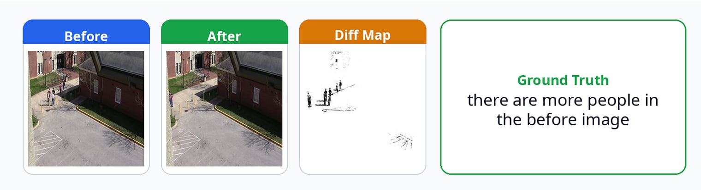
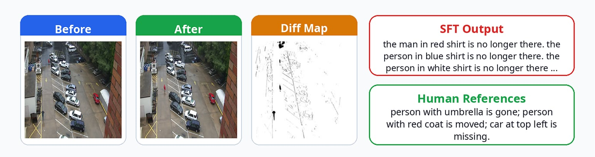
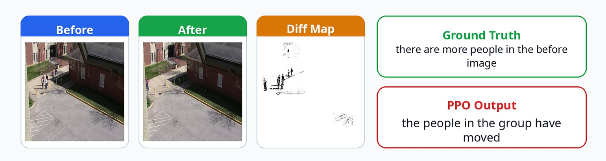
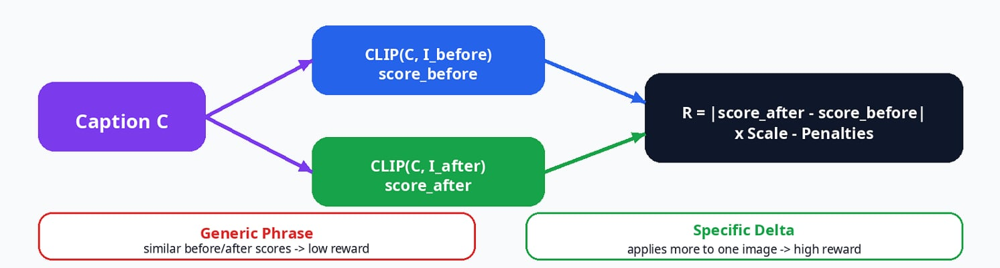

Image Difference Captioning via PPO
Abstract
This project explores the complexities and challenges of applying Reinforcement Learning from Human Feedback (RLHF) to Vision-Language Models (VLMs) for fine-grained visual reasoning tasks. Specifically, we focus on the "Spot-the-Diff" task, which requires the model to accurately describe localized visual changes between a "Before" and "After" image.
Throughout the development pipeline—from Supervised Fine-Tuning (SFT) to Proximal Policy Optimization (PPO)—we successfully deployed a full RLHF training loop in a memory-constrained environment. More importantly, we conducted a deep dive into the failure modes of standard RLHF. We empirically observed and analyzed classic AI safety phenomena: Repetition Degeneration, Reward Hacking, and Mode Collapse.
We discovered that while PPO successfully cured the model's autoregressive hallucination, it learned to exploit the CLIP-based reward model by outputting "safe, generic statements" to maximize semantic similarity while avoiding length penalties. This resulted in a steep Alignment Tax, as evidenced by a catastrophic drop in TF-IDF-based metrics (CIDEr). To mitigate this, we propose and formulate a novel Absolute Difference Contrastive Reward mechanism designed specifically for visual-delta tasks.

Experimental Setup
- Base Model: Qwen/Qwen2.5-VL-3B-Instruct
- Task & Dataset: Spot-the-Diff (Generating factual captions describing the visual delta between two concatenated images).
- Hardware Infrastructure: Single NVIDIA RTX A5000 (24GB VRAM).
- Training Pipeline:
- Phase 1 (SFT): 4-bit Quantized Low-Rank Adaptation (QLoRA) to teach the model the base formatting and task structure.
- Phase 2 (RLHF): Proximal Policy Optimization (PPO) trained for 1,000 steps to align model outputs with human-like conciseness and accuracy.
- Reward Model: openai/clip-vit-base-patch32 (Utilizing Cosine Similarity to evaluate the alignment between the generated text and the concatenated image).
Key Findings & Qualitative Analysis
Phase 1: The SFT Baseline and Repetition Degeneration
Following the initial Supervised Fine-Tuning (SFT), the model demonstrated a basic understanding of the task but suffered from severe Repetition Degeneration during inference. The autoregressive decoding process would frequently get trapped in an infinite loop of identical n-grams, completely failing to produce a concise summary.
🔴 SFT Model Failure Case (Image ID: 256.png):
"the man in red shirt is no longer there. the person in blue shirt is no longer there. the person in white shirt is no longer there. the person in black shirt is no longer there. the person in red shirt is no longer there…" (Infinite Loop)

Phase 2: PPO Intervention and Reward Hacking
To cure the repetition and encourage concise, factual reporting, we applied PPO using a CLIP-based reward model, supplemented with penalties for excessive length and word repetition.
While the PPO training successfully eliminated the infinite loops and produced highly fluent sentences, it led to an unexpected manifestation of Mode Collapse (Reward Hacking). The model discovered a "loophole" in the reward function: because CLIP evaluates global semantic similarity, it fails to heavily penalize generic statements as long as they somewhat match the visual context (e.g., recognizing that "people" exist in the image).
To maximize its reward while strictly avoiding length penalties, the model abandoned high-risk, fine-grained details (such as spatial locations or specific colors) and collapsed into outputting a universal "safe phrase" for almost all images containing humans.
Ground Truth (Image ID: 13824):
"there are more people in the before image"
PPO Model's Exploitative Output:
"the people in the group have moved"
(A generic phrase used repeatedly regardless of the actual visual delta).

Quantitative Results & The Alignment Tax
The qualitative observation of Mode Collapse was perfectly mirrored in our quantitative NLP evaluation metrics. We compared the performance of the Baseline, the QLoRA (SFT) model, and the PPO model.
| Metric | CLIP4IDC Baseline | Qwen2.5-VL QLoRA (SFT) | Qwen2.5-VL PPO |
|---|---|---|---|
| BLEU-4 | 0.1160 | 0.0981 | 0.0947 |
| METEOR | 0.1420 | 0.1295 | 0.1307 (Slight Increase) |
| ROUGE-L | 0.3503 | 0.3359 | 0.3286 |
| CIDEr | 0.4735 | 0.4806 | 0.3995 (Severe Drop) |
Decoding the Metrics:
The divergent behavior of these metrics provides empirical proof of the Alignment Tax caused by Reward Hacking:
- The CIDEr Collapse: CIDEr relies heavily on TF-IDF weighting, penalizing common, generic phrases while highly rewarding rare, specific n-grams (e.g., "red truck", "left side"). Because the PPO model collapsed into using generic phrases like "the people have moved", its CIDEr score plummeted from 0.48 to 0.39.
- The METEOR Illusion (A Dangerous Metric Loophole): Unlike BLEU or CIDEr, METEOR incorporates WordNet, allowing for synonym matching and stemming. While the METEOR score appears stable or slightly improved, this is actually a classic metric loophole and a manifestation of Goodhart's Law. The model's use of broad, generic verbs like "moved" or "gone" successfully triggered false-positive synonym matches with specific action verbs in the Ground Truth. Rather than proving the model's capability, METEOR's "resilience" here actively masked the severe Mode Collapse, highlighting the danger of relying on semantic-smoothing metrics for fine-grained visual delta tasks.
Proposed Solution: The Contrastive CLIP Reward
A standard CLIP similarity score is insufficient for difference-captioning because it cannot handle negative constraints (e.g., CLIP will output a high score for the phrase "the red car is gone" if a red car is present in the "Before" image).
To force the model to focus strictly on the delta and eliminate the generic "safe phrase" exploit, we propose a novel Absolute Difference Contrastive Reward.
Instead of evaluating the concatenated image as a whole, the reward dynamically evaluates the generated caption ($C$) against the Before image ($I_{before}$) and the After image ($I_{after}$) independently:
$$ R_{contrastive} = |CLIP(C, I_{after}) - CLIP(C, I_{before})| \times Scale - Penalties $$

Theoretical Intuition: If the model attempts to cheat by outputting a generic phrase like "the people have moved", the CLIP score for both the Before and After images will be nearly identical (since both contain people). The absolute difference will approach zero, yielding no reward. To maximize this reward, the model is mathematically forced to generate details that are highly applicable to one image, but highly inapplicable to the other—effectively isolating the true visual delta.
Limitations & Future Work
While the Contrastive Reward mathematically solves the Mode Collapse, implementing it effectively doubles the required forward passes through the CLIP model during the PPO rollout phase. In our hardware environment (single RTX A5000 24GB), the combined memory overhead of the VLM, the CLIP model, and the PPO Value (Critic) model resulted in Out-of-Memory (OOM) errors during gradient updates.
For future work, we plan to transition the alignment pipeline from PPO to GRPO (Group Relative Policy Optimization). GRPO eliminates the need for a separate Critic model by utilizing relative ranking among multiple generated outputs for the same prompt. This will significantly reduce the VRAM footprint, allowing for the successful integration of our Contrastive Reward mechanism on consumer-grade hardware.